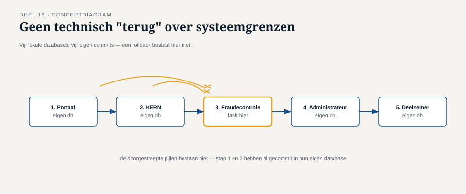

Deel 18 — Distributed transactions in async context: saga's en compenserende transacties
Reader · Ductus-cursus Enterprise Integration Patterns · niveau 2 (professional) · deel 18 van 22
18.0 De fraudecontrole die te laat kwam
Twee maanden na de invoering van de gelaagde orkestratie uit deel 17 deed zich precies het scenario voor dat aan het eind van dat deel als vooruitblik werd genoemd: bij een uitkeringsproces was het bedrag al vastgesteld door de externe administrateur (stap 2) en al gecommuniceerd aan de deelnemer via een voorlopige bevestiging, toen de fraudecontrole (stap 3) alsnog een ernstige onregelmatigheid signaleerde — een vermoedelijk vervalst identiteitsbewijs bij de aanvraag.
Bij een klassieke, synchrone database-transactie zou dit soort situatie zich niet voordoen: alle stappen zouden binnen één transactiegrens vallen, en bij een probleem in stap 3 zou de hele transactie worden teruggedraaid (rollback), inclusief stap 1 en 2, alsof er nooit iets gebeurd was. Maar het uitkeringsproces speelt zich af over vijf onafhankelijke systemen, elk met hun eigen, lokale opslag — er bestaat geen enkele technische mogelijkheid om in één handeling alle vijf systemen tegelijk terug te draaien. KERN heeft de pensioendatum al vastgelegd. De externe administrateur heeft het bedrag al berekend en waarschijnlijk al in zijn eigen administratie vastgelegd. De deelnemer heeft al een voorlopige bevestiging gezien.

Dit deel behandelt hoe je met dit fundamentele gegeven omgaat: niet door te doen alsof rollback over meerdere systemen mogelijk is, maar door expliciet te ontwerpen wat er gebeurt als een latere stap in een keten een eerdere, al voltooide stap ongedaan moet maken.
18.1 Waarom ACID hier niet werkt, en wat daarvoor in de plaats komt
Een klassieke databasetransactie belooft ACID: atomiciteit (alles of niets), consistentie, isolatie, en duurzaamheid. Atomiciteit is precies de eigenschap die hier ontbreekt: er is geen mechanisme dat vijf onafhankelijke systemen, elk met eigen beheer, eigen beschikbaarheid en eigen faalmomenten, in één ondeelbare handeling kan laten slagen of falen.
Distributed-transactieprotocollen die dit wél proberen af te dwingen (zoals two-phase commit, kortweg 2PC) bestaan, maar hebben in de praktijk van asynchrone, over organisatiegrenzen heen lopende ketens zoals bij Meridiaan een fundamenteel probleem: ze vereisen dat alle betrokken systemen tijdens de hele transactieduur blokkerend wachten op een gecoördineerd commit-signaal — precies het soort synchrone, wachtende afhankelijkheid die deel 1 al onhoudbaar verklaarde zodra een keten schakels bevat met onvoorspelbare beschikbaarheid, zoals een externe partij. Dit is de reden dat de API-cursus, waar 2PC en de grenzen van gedistribueerde transacties binnen één beheersbare technische omgeving worden behandeld, expliciet vaststelt waar die grens ligt — en waarom deze cursus, voor ketens die over onafhankelijke, asynchrone systemen lopen, een ander antwoord geeft.
Kernzin 19 van de cursus: waar ACID atomiciteit garandeert door te wachten tot iedereen tegelijk kan committen, garandeert een saga niets vooraf — hij accepteert dat elke stap definitief is, en ontwerpt vooraf wat er gebeurt als een latere stap alsnog moet worden teruggedraaid.
18.2 Het saga-patroon
Een saga is een reeks lokale transacties, elk binnen één systeem en dus met normale ACID-garanties op dat lokale niveau, waarbij elke stap — als hij eenmaal is voltooid — als definitief en zichtbaar wordt beschouwd, niet als voorlopig binnen een grotere, nog-niet-afgeronde transactie. Als een latere stap mislukt, wordt niet de illusie van "terugdraaien" nagestreefd, maar wordt voor elke eerdere, al voltooide stap een expliciet ontworpen compenserende actie uitgevoerd — een nieuwe, eigen actie die het effect van de eerdere stap zoveel mogelijk ongedaan maakt, niet door de tijd terug te draaien, maar door een nieuw feit toe te voegen dat het eerdere feit corrigeert.
Toegepast op 18.0: in plaats van te proberen "doen alsof de pensioendatum nooit is geregistreerd", registreert KERN een nieuwe, expliciete gebeurtenis: "uitkeringsproces gepauzeerd wegens fraudeonderzoek", die de eerdere registratie niet verwijdert maar aanvult met de nieuwe stand van zaken. De externe administrateur ontvangt een compenserende opdracht: "trek de eerdere berekening in, markeer als niet-actief". De deelnemer ontvangt een nieuw bericht dat de voorlopige bevestiging corrigeert: "uw uitkering is in onderzoek, de eerdere bevestiging was voorbarig" — geen verwijdering van het eerdere bericht (dat is, eenmaal verzonden, onomkeerbaar), maar een nieuw feit erbovenop.
Dit is een fundamenteel andere mentale houding dan rollback: een saga voegt altijd nieuwe feiten toe, nooit oude feiten weg. Elke compenserende actie is zelf weer een command of event dat door de gewone messaging-infrastructuur (deel 1-16) reist, met dezelfde idempotentie- en betrouwbaarheidseisen als elke andere stap.

18.3 Twee vormen van saga-coördinatie
Net als bij de keuze tussen orkestratie en choreografie uit deel 17, kan een saga op twee manieren worden gecoördineerd — en het is geen toeval dat deze twee vormen sterk lijken op de indeling uit dat deel, omdat een saga in essentie een speciaal geval is van precies dat onderscheid, toegepast op het probleem van terugdraaien.
Georkestreerde saga. Een centrale saga-orkestrator (vergelijkbaar met de orkestrator uit deel 17) kent niet alleen de normale volgorde van stappen, maar ook, voor elke stap, de bijbehorende compenserende actie. Bij een mislukking roept de orkestrator, in omgekeerde volgorde, de compenserende acties van elke al voltooide stap aan. Dit past bij Meridiaan's gekozen aanpak voor de eerste vier stappen van het uitkeringsproces (deel 17), waar orkestratie al was gekozen — de saga-logica is een natuurlijke uitbreiding van de bestaande orkestrator, niet een nieuw, apart mechanisme.
Choreografische saga. Elke stap in de keten kent zelf zijn eigen compenserende reactie op een "mislukking"-event van een latere stap, zonder centrale coördinatie — vergelijkbaar met hoe de choreografische stappen uit deel 17 zelfstandig op gebeurtenissen reageerden. Dit past beter bij ketens die al choreografisch zijn opgezet, maar heeft hetzelfde overzichtsrisico dat deel 17 al identificeerde: bij een langere keten met veel mogelijke compensatiepaden wordt het steeds lastiger om te overzien welke compensatie waar wordt getriggerd.
Bij Meridiaan is, consistent met de gelaagde keuze uit deel 17, voor een georkestreerde saga gekozen voor de vier bindend-afhankelijke stappen, met expliciete compensatielogica in de bestaande orkestrator.
18.4 Wanneer compensatie zelf niet volstaat
Niet elke stap is even makkelijk te compenseren, en dit deel zou onvolledig zijn zonder die grens te erkennen. Een geldbedrag terugstorten is, mits nog niet uitgekeerd, relatief eenvoudig te compenseren. Een reeds verzonden brief aan een deelnemer is dat niet — je kunt de brief niet terughalen, alleen een nieuwe, corrigerende brief sturen, met het onvermijdelijke gevolg dat de deelnemer tijdelijk, en zichtbaar, een onjuiste indruk heeft gehad.
Deze asymmetrie — sommige effecten zijn volledig compenseerbaar, andere zijn slechts corrigeerbaar met een zichtbaar spoor van de fout — moet expliciet worden meegewogen bij het ontwerp van elke stap in een saga. Bij Meridiaan is daarom bewust gekozen om de "voorlopige bevestiging" aan de deelnemer (stap na de bedragberekening, vóór de fraudecontrole) in te richten met expliciete taal die de voorlopigheid benadrukt ("dit bedrag is indicatief, in afwachting van definitieve goedkeuring"), juist om de impact van een eventuele latere compensatie te verzachten — een ontwerpkeuze die niet uit de techniek volgt, maar uit een bewuste erkenning dat niet elke compensatie zonder gevolgen is.
Vuistregel: ontwerp niet alleen de compenserende actie voor elke stap, maar ook de communicatie die de oorspronkelijke stap begeleidt — hoe voorlopiger je een vroege stap presenteert, hoe minder schadelijk een latere compensatie wordt.
18.5 Afstemming met de API-cursus
Zoals in de opzet van deze cursus vastgesteld: de API-cursus behandelt distributed transactions binnen de grenzen van 2PC en vergelijkbare protocollen, primair toepasbaar binnen een beheerste, vaak synchrone technische omgeving met een beperkt aantal, onderling vertrouwde deelnemers. Deze cursus behandelt het saga-patroon specifiek voor de situatie waarin die voorwaarden niet gelden: asynchrone, over organisatiegrenzen heen lopende ketens met onafhankelijke systemen die niet gelijktijdig kunnen blokkeren op een gecoördineerd commit.
De praktische vuistregel voor de grens: is er een technische mogelijkheid én organisatorische wenselijkheid om alle betrokken systemen tijdens de transactieduur te laten blokkeren op een gezamenlijk commit-moment? Zo ja, ligt 2PC (API-cursus) binnen bereik. Zo nee — zoals bij Meridiaan, waar een externe partij en meerdere interne systemen met eigen beschikbaarheidsprofielen zijn betrokken — is een saga (deze cursus) het aangewezen antwoord.
Samenvatting van deel 18
- ACID-atomiciteit is niet haalbaar over onafhankelijke, asynchrone systemen heen — 2PC-achtige protocollen vereisen blokkerend wachten dat in gedistribueerde, over organisatiegrenzen heen lopende ketens onhoudbaar is (afstemming met de API-cursus).
- Een saga behandelt elke lokale stap als definitief en zichtbaar; bij een latere mislukking wordt niet teruggedraaid maar gecompenseerd — een nieuw feit dat het effect van een eerdere stap corrigeert, zonder die eerdere stap te wissen.
- Saga's kunnen georkestreerd (centrale coördinatie van compensaties, vergelijkbaar met deel 17) of choreografisch (elke stap kent zijn eigen compensatiereactie) worden gecoördineerd.
- Niet elk effect is even goed compenseerbaar — de communicatie rond een vroege stap moet bewust rekening houden met de mogelijkheid van latere compensatie, om de schade daarvan te beperken.
Vooruitblik
Deel 19 — het tweede tweedagdelen-deel van de cursus — behandelt het outbox-pattern en transactional messaging: hoe zorg je ervoor dat een lokale databasewijziging en het versturen van het bijbehorende bericht altijd samen slagen of samen falen, nooit half — de bouwsteen die elke saga-stap in de praktijk pas werkelijk betrouwbaar maakt.